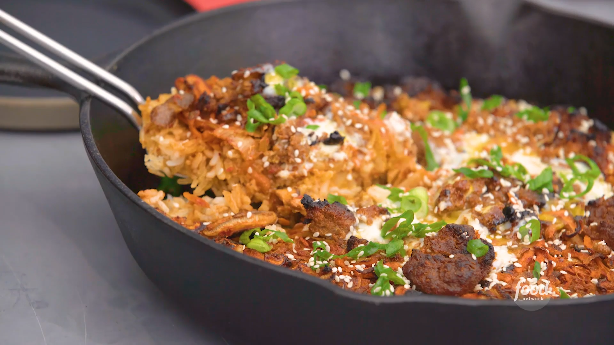

Crunchy Bibimbap Pizza

What is it?
Drawing influence from the beloved Korean dish, bibimbap, particularly the dolsot bibimbap variation, this simple skillet dinner incorporates a delightful combination of rice, vegetables, and meat. Dolsot bibimbap is traditionally prepared in a hot stone bowl, imparting a unique crunchy texture and golden-brown crust to the rice. In this adaptation, the essence of the dish is captured through a harmonious blend of flavors and textures, resulting in a satisfying meal that pays homage to the rich culinary heritage of Korea.
Ingredients you'll need
- 4 scallions, green parts only, thinly sliced on the bias
- 1/4 cup gochujang (Korean red chile paste)
- 1/4 cup low-sodium soy sauce
- 2 tablespoons toasted sesame oil
- 1 clove garlic, finely grated
- 4 ounces ground beef
- 2 large carrots, grated on the large holes of a box grater
- 1 cup kimchi, coarsely chopped
- 4 ounces shiitake mushrooms, stemmed and cut into strips
- 1/4 cup vegetable oil
- 4 cups cooked long-grain rice
- 1 large egg
- Toasted sesame seeds, for serving
Steps
- Position an oven rack in the bottom of the oven and preheat to 500 degrees F.
- Cover the scallions with ice water and chill until ready to serve (the ice water will make them curl).
- Whisk together the gochujang, soy sauce, sesame oil and garlic in a small bowl until smooth. Mix 3 tablespoons of the gochujang mixture with the ground beef in a small bowl until combined.
- Toss 1 tablespoon of the gochujang mixture with the carrots, kimchi and shiitake in a medium bowl until completely coated.
- Pour the oil in a 10-inch cast-iron skillet and swirl to coat. Add the rice and press down to flatten and cover the entire surface of the skillet. Drizzle with 1 tablespoon of the gochujang mixture and spread it evenly over the rice, leaving about 1/2-inch of the edge exposed. Spread the carrot mixture evenly over the sauce and top with tablespoon-size portions of the beef mixture.
- Heat the skillet over high heat until the sides start to dry out and you see the oil sizzling around the sides, about 6 minutes. Transfer to the oven and bake until the meat starts to brown, about 8 minutes. Remove from the oven, crack the egg in the center and return to the oven to continue baking until the egg is set, 5 to 6 minutes more. Let cool for 10 minutes.
- Remove the scallions from the water, pat dry and sprinkle on top of the meat and egg. Top with the remaining gochujang sauce and some sesame seeds. Cut into slices to serv